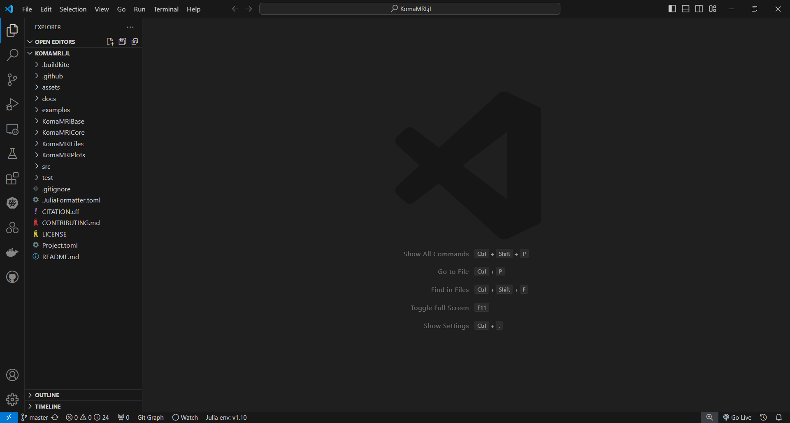
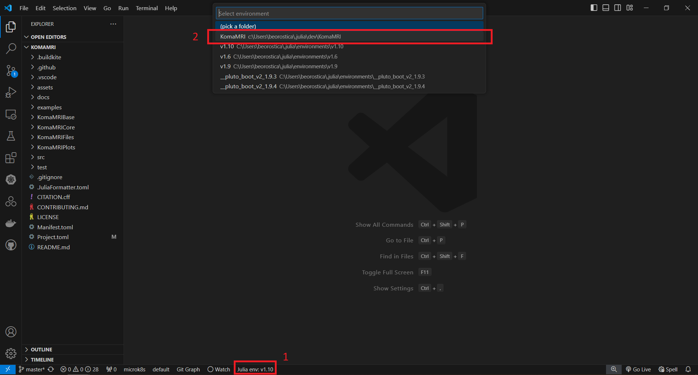
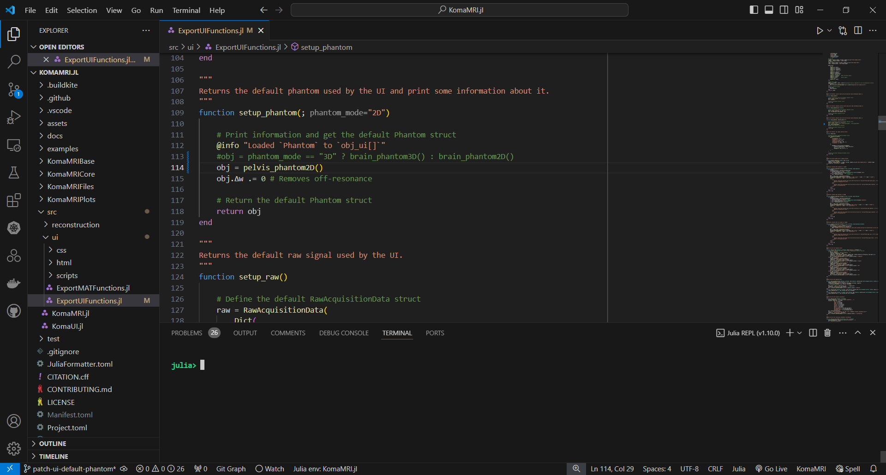
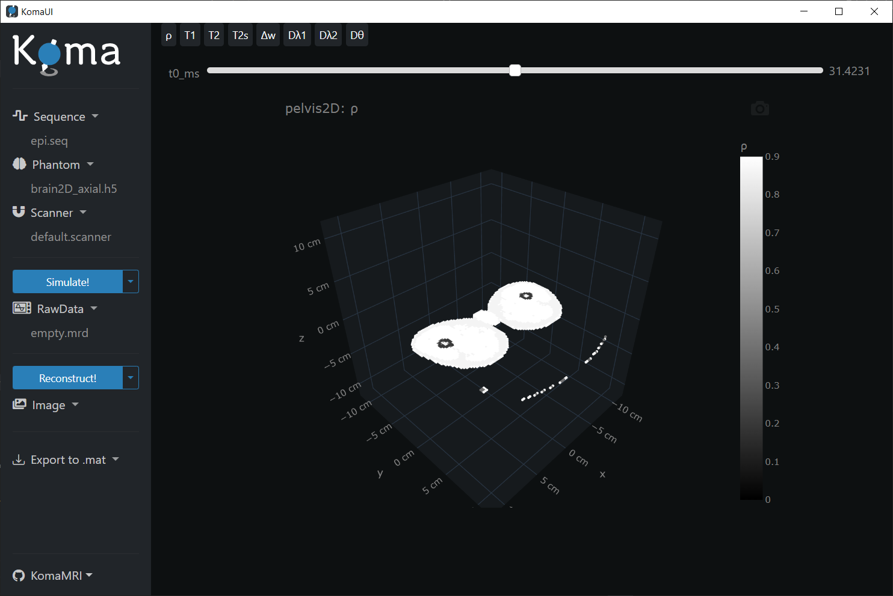
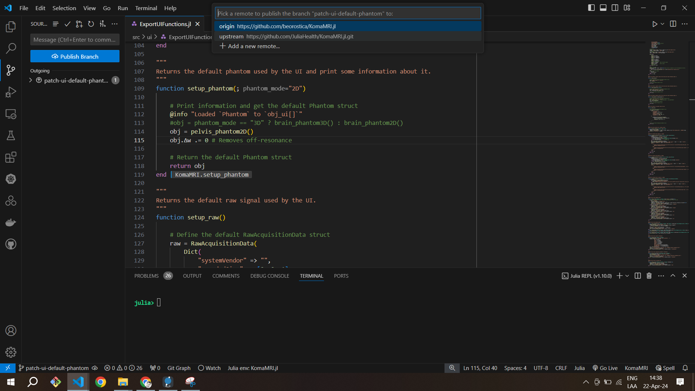
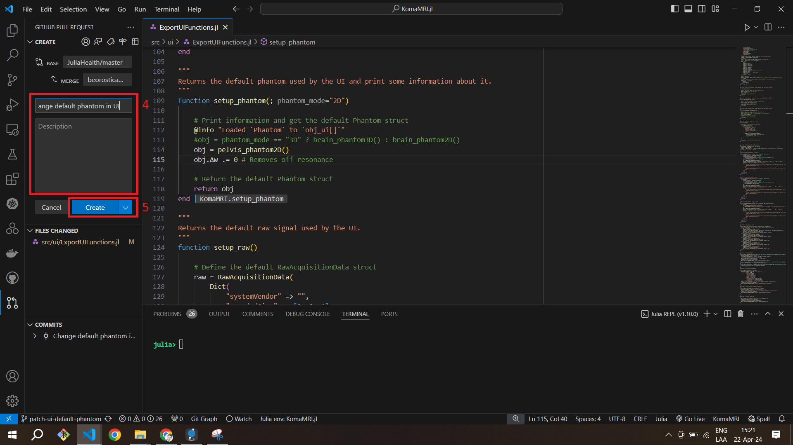

Advanced Users
If you really want to stay in tune with the most recent features, test some ideas or even contribute to the KomaMRI project, it is necessary to install and configure some tools in your machine:
- Juliaup: this is the manager for installing different versions of Julia.
- Julia: this is the programming language. It is advisable you install it with Juliaup.
- Git: this is a version control system which is handful for coding. Installation.
- Github: this is a cloud-based Git repository which is handful for managing the KomaMRI project. Create Account
- VScode: this is a code editor with support for development operations. Installation
- VScode Plugings: they enable VSCode to have more handy features. We recommend you to install the following: "Julia", "Git Graph", "GitHub Pull Requests".
Setup your Fork of KomaMRI
Once everything is installed, you need to create a fork of the KomaMRI repo in your Github account. Go to the official KomaMRI repo https://github.com/JuliaHealth/KomaMRI.jl and follow the bellow steps:


Now, your fork of KomaMRI should look like this:

Now you need to clone your fork of the KomaMRI repo. In julia you can do this by opening a terminal and typing (make sure you change the <github-username>):
(@v1.10) pkg> dev https://github.com/<github-username>/KomaMRI.jlThis saves the local git project at the ~/.julia/dev/KomaMRI/ directory. You can open VScode and open this folder, it should look like this:

Everything looks good. Let's run KomaMRI, but before you can do so, you need to setup the Julia environment. The information of the environment is ultimately defined by the file Manifest.toml, however you don't have that file yet. So you need to create it from the information of the Project.toml.
Let's select the environment of our KomaMRI project:

Now, open a Julia REPL:

In the Julia REPL you have to create the Manifest.toml file with the develop command considering de local folders KomaMRIBase, KomaMRICore, KomaMRIFiles and KomaMRIPlots. Additionally you can install all the dependencies listed in the Manifest.toml with the instantiate command:
(KomaMRI) pkg> dev ./KomaMRIBase ./KomaMRICore ./KomaMRIFiles ./KomaMRIPlots
(KomaMRI) pkg> instantiateWith these steps your environment is setup. You can now run the KomaMRI user interface:
julia> using KomaMRI
julia> KomaUI()
Let's see what is the default phantom in the user interface by clicking in the Phantom dropdown and then press the View Phantom button:

You can close the KomaMRI user interface.
Make changes to remote repos
So far so good. However you want to make some changes to your Github Fork and even you want to contribute to the KomaMRI project. But first, let's make some local changes in the local git repo. In the following example we will change the default phantom displayed in the user interface.
First create a branch with a descriptive name, in this case patch-ui-default-phantom:


In this new branch, we are going to edit the setup_phantom function located in the file src/ui/ExportUIFunctions.jl. We simply replace the line where a brain phantom is defined by the function pelvis_brain2D:

Then, you need to compile the function setup_phantom, simply put the cursor in a place inside the function setup_phantom and then press Alt + Enter:

Now, let's see what is the new default phantom in the user interface by clicking in the Phantom dropdown and then press the View Phantom button:
julia> KomaUI()
Everything looks good, let's stage the changes:

And commit the changes:

Let's upload these changes in your github fork or to the official KomaMRI repo by selecting the origin or the upstream option:



About Julia Environments and Subdirectories
So far, the KomaMRI package have 4 subdirectories KomaMRIBase, KomaMRICore, KomaMRIPlots and KomaMRIFiles. These subdirectories are proper julia packages by themselves, so they have their own Project.toml which need to resolve an environment defined ultimately by a Manifest.toml.
This is how these packages are related:
KomaMRIBasedoesn't depend on any of these other subdirectories.KomaMRICoredepends directly onKomaMRIBaseKomaMRIPlotsdepends directly onKomaMRIBaseKomaMRIFilesdepends directly onKomaMRIBaseKomaMRIdepends directly onKomaMRICore,KomaMRIPlotsandKomaMRIFiles
If you want to edit only the direct contents of one of these packages, you simply need to activate the julia package and then instantiate to generate the Manifest.toml and install dependencies. However, if you want to make changes that involve the packages and it's direct dependencies you need to create an environment that indicates so.
For instance, to edit KomaMRICore and its direct dependency KomaMRIBase you need to create the Manifest.toml like so:
user@machine ~/.julia/dev/KomaMRI
$ julia
(@v1.10) pkg> activate KomaMRICore
(KomaMRICore) pkg> dev ./KomaMRIBaseAnd for creating the Manifest.toml file of KomaMRIwhich considers all the subdirectories you have to do:
user@machine ~/.julia/dev/KomaMRI
$ julia
(@v1.10) pkg> activate .
(KomaMRI) pkg> dev ./KomaMRIBase ./KomaMRICore ./KomaMRIFiles ./KomaMRIPlots